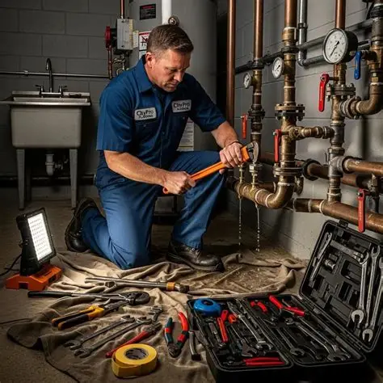

About K-Plumbing

Our History
K-Plumbing was founded to provide the local community with fast, honest, and reliable plumbing services. Since then, we have grown into a trusted name across the greater Pretoria area.
Our Mission
To provide fast, honest, and reliable plumbing services to every household and business we serve.
Our Vision
To be the most trusted plumbing service provider in our community.
Meet the Team
K. Moremi
Founder & Master Plumber
T. Nkosi
Senior Technician
S. Dlamini
Customer Care Coordinator
Certifications & Accreditations
- Licensed Plumber Registration
- Plumbing Industry Association Member
- Fully Insured & Compliant with Local Building Regulations